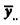
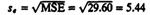
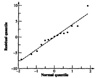
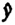
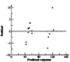
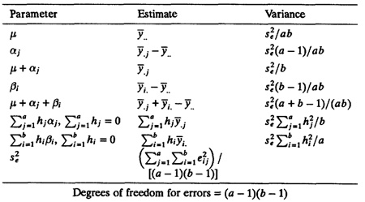
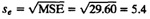
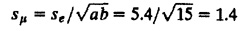
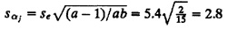
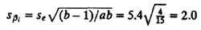

Variation
Square

| Previous | Table of Contents | Next |
| TABLE 21.5 ANOVA Table for the Cache Comparison Study | ||||||
|---|---|---|---|---|---|---|
| Component | Sum of Squares | Percentage of Variation | Degrees of Freedom | Mean Square | F-Computed | F-Table |
| y | 91,595.00 | |||||
|  | 78,192.59 | |||||
|
| 13,402.41 | 100.0 | 14 | |||
| Caches | 12,857.20 | 95.9 | 2 | 6428.60 | 217.2 | 3.1 |
| Workloads | 308.40 | 2.3 | 4 | 77.10 | 2.6 | 2.8 |
| Errors | 236.80 | 1.8 | 8 | 29.60 | ||


FIGURE 21.1 Normal quantile-quantile plot for the residuals of the cache design study.
In order to check the homogeneity of the error variance, a scatter plot of residuals versus predicted response  was prepared and is shown in Figure 21.2. This plot is not very satisfactory since the spread in residuals is high at higher values of the response.

FIGURE 21.2 Plot of the residuals versus predicted response for the cache design study.
The expressions for variance of the model parameters are listed in Table 21.6. These can be derived in a manner similar to that for one-factor design (Exercise 20.1). The confidence intervals for the effects can be computed using t-values read at (a - 1)(b - 1) degrees of freedom, which again is the degrees of freedom associated with errors. In the table, the estimates and variance for linear combination of effects, such as µ + αj and µ + αj + βj, are also shown along with those for contrasts of effects. The contrast formulas can be used to compute confidence intervals for differences such as α1 - α2 to see if there is a significant difference between the two levels of factor A.
| TABLE 21.6 Parameter Estimation for Two Factors without Replications |
|---|

Degrees of freedom for errors = (a - 1)(b - 1)

The standard deviation of the grand mean µ is

The standard deviation of αj’s is

The standard deviation of βi’s is

The degrees of freedom for the errors are (a - 1)(b - 1) = 8. For 90% confidence interval, the t[0.95;8] read from Table A.4 in the Appendix is 1.86.
| TABLE 21.7 Confidence Intervals for Effects in Cache Comparison Study | |||
|---|---|---|---|
| Parameter | Mean Effect | Standard Deviation | Confidence Interval |
| µ | 72.2 | 1.4 | (69.6, 74.8) |
| Caches | |||
| Two caches | -21.2 | 2.8 | (-24.9, -17.5) |
| One cache | -20.2 | 2.8 | (-23.9, -16.5) |
| No cache | 41.4 | 2.8 | (37.7, 45.1) |
| Workloads | |||
| ASM | -0.5 | 2.0 | (-5.8, 4.7)a |
| TECO | 8.8 | 2.0 | (3.6, 14.0) |
| SIEVE | -3.5 | 2.0 | (-8.8, 1.7)a |
| DHRYSTONE | -1.5 | 2.0 | (-6.8, 3.7)a |
| SORT | -3.2 | 2.0 | (-8.4, 2.0)a |
a Not significant. | |||
| Previous | Table of Contents | Next |
){kind=link}
){kind=link}
){kind=link}
){kind=link}